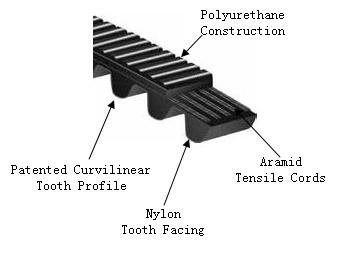
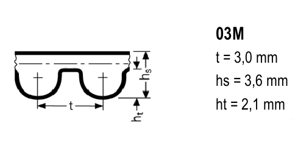

Rostock
From base48
Base48 Rostock
{kind=link}
Founder:
rmarko
Coops:
hyna, arius, cubz
HW License:
GPL
Status:
finished
Created:
2012-11-11
Last Modified:
2014-08-13
The printer is fully functional and prints reasonably well. For prints with larger base (10cm and more) it's better to use brim to avoid warping.
Contents
Links
- Rostock on reprap wiki
- Rostock on thingiverse
- Original Rostock BoM
- Airtripper's Bowden extruder (BoM, assembly)
- Airtripper's Bowden extruder on thingiverse
- Base plate dimensions
Usage
- Use latest slic3r (1.0.0RC2+), packages available for Fedora 20 and possibly for other distros as well
- slic3r configs are available at https://github.com/hackerspace/slic3r - make sure you are using 'rostock' configs not 'base_*'. Alternatively use 'rostock_slice' script available in the same repository under 'bin' folder.
- Go to http://octopi.local and upload your gcode file
- Load the file from the list
- Wipe the bed of the printer with Alpa or some other alcohol
- Turn on the printer with the green switch
- Hit print and observe - if the first layer doesn't sticks to bed, cancel the print, home the printer, clean the mess and repeat. If the print head drags plastic residues during the print of the skirt (few loops around actual print), carefully remove the residue with tweezers as it might get into the printed object itself.
- When the print job is done, carefully remove the object from bed. If you tear the tape, replace it.
- Don't leave mess around the printer! You are not the only one who is using it.
Build
Printed parts
| Part | Required | Done |
|---|---|---|
| motor_end.stl | 3 | 3 |
| idler_end.st | 3 | 3 |
| Modded parts | ||
| platform_mod.stl | 1 | 1 |
| carriage-slim_holder_mod.stl | 3 | 3 |
| Bearing upgrade [1] | 3 | 3 |
| Airtripper's Bowden extruder | ||
| airtripper-extruder-body.stl | 1 | 1 |
| airtripper-extruder-idler.stl | 1 | 1 |
| airtripper-extruder-strut.stl | 1 | 1 |
| airtripper-extruder-shaft.stl | 1 | 1 |
| Bowden cable & hotend holder [2] | 1 | 1 |
Stuff to buy
| Part | Required | Where to get it | Price | Bought/Donated |
|---|---|---|---|---|
| Heatbed | ||||
| Teplonoši 1R8 | 9 | http://www.gme.cz/dratove-rezistory-do-20w/rr-w20-1-8r-p114-554/ | cca 160 | |
| Fasteners | ||||
| M3 nuts | 100 | |||
| M3 washers | 100 | |||
| M4 washers | 20 | donated | Hyna | |
| M4 nuts | 20 | donated | Hyna | |
| M6 washers (extruder) | 2x2 | donated | Hyna | |
| M6 nuts (extruder) | 2x2 | donated | Hyna | |
| M8 washers | 3 | donated | Hyna | |
| M8 nuts (+1 for bowden cable holder) | 4 | donated | Hyna | |
| M3x6 | 3 | donated | Hyna | |
| M3x12 (platform & carriage joints) | 40 | |||
| M3x15 (idler & motor ends) | 30 | |||
| M3x20 (rods) | 20 | |||
| M3x30 (extruder) | 6 | |||
| M3x45 (extruder) | 4 | |||
| M4x40 (plywood mounting) | 16 | donated | Hyna | |
| M6x30 (extruder mounts) | 2x2 | donated | Hyna | |
| M8x35 (608 ball bearings) | 3 | donated | Hyna | |
| Linear motion | ||||
| T2.5 Timing belt | 5m | http://www.ebay.co.uk/itm/T2-5-Timing-Belt-per-metre-RepRap-Prusa-Mendel-Huxley-MendelMax-Rostock-etc-/221163008293?ssPageName=ADME:L:OU:US:3160 | - | ordered |
| T2.5 pulley | 3 | http://www.ebay.co.uk/itm/T2-5-16-aluminium-pulleys-RepRap-Prusa-Mendel-Huxley-MendelMax-Rostock-etc-/221163040946?pt=LH_DefaultDomain_3&hash=item337e5830b2 | 1170 CZK (total with belts and shipping) | ordered |
| 762x8 mm smooth rod | 6 | 287 Kc | bought (Hyna) | |
| LM8UU linear bearing | 6 | 260 Kc | bought (Hyna) | |
| 608ZZ skateboard ball bearing | 1 kit of 10 | local supplier in Svitavy (cz) | 182 czk | bought (cubz) |
| F608ZZ 8x22x7 flanged ball bearing | 1 kit of 10 | possible to use 608ZZ with http://www.thingiverse.com/thing:10723 instead | ||
| MR105 ZZ Model Miniature Ball Bearing 5x10x4 | 2 | http://www.rcpark.cz/radialni-s-kovovym-tesnenim/8970-lozisko-5x10x4-chrom-ocel-mr105zz-2-.html | ||
| 5mm plain insert | 2 | http://www.rcpark.cz/spojovaci-tisicihrany/9463-koncovka-kardanu-lodni-hridele-pr-5-0mm.html | 2x118 Kc | bought (Hyna) |
| ball joint (set of 12) + carbon tubes (2x 1m) | http://www.rcpark.cz/traxxas-summit-1-10-2-4g-rtr/22104-traxxas-kulovy-cep-velky-12-.html http://www.rcpark.cz/uhlikove-tyce-laminat/37968-uhlikova-trubicka-6x4mm-1m-255.html | 400 Kc (RCPark discount :) | bought (Hyna) | |
| Tubes | ||||
| PTFE Tube 2x4mm (1 meter) | 1 | local Brno supplier | TBD | bought (Hyna) |
| Electronics | ||||
| NEMA 17 stepper motor | 4 | 400 CZK | bought | |
| Sanguinololu PCB | 1 | http://www.emakershop.com/browse/listing?l=132 | ~200 CZK | bought |
| Stepsticks | 4 | http://www.ebay.com/itm/Pololu-StepStick-Stepper-Motor-Driver-RepRap-RAMPS-Sanguinololu-/280877891763?pt=LH_DefaultDomain_0&hash=item4165a080b3#shId | ~200 CZK piece + shipping | bought |
| Resist. & capac. | many | Some special values need to be ordered at GME | Sets available. | |
| ATMEGA644p | 1 | 185 czk | We got one spare. | |
| FT232RL | 1 | http://www.gme.cz/i-o-obvody-multifunkcni-periferie/ft232rl-p959-303/ | 155 czk | ordered |
| USB connector | 1 | http://www.gme.cz/konektory-usb-b/usb-konektor-usb1x90b-pcb-p832-120/ | ordered | |
| LM7805 | 1 | http://www.gme.cz/linearni-regulatory-napeti-pevne/7805-stm-p330-149/ | ordered | |
| SCREWTERMINAL-5MM-2 | 1 | http://www.gme.cz/svorkovnice-do-dps/ark306-2p-p821-134/ | ordered | |
| |
1 | not used | ||
| |
1 | not used | ||
| DIP-40 SOCKET | 1 | Base48 sourced | ||
| SHUNT jumper | 12 | http://www.gme.cz/jumpery-zkratovaci-propojky/zkratovaci-propojka-xinya-jump-bl-open-blue-p832-143/ | ordered | |
| Male Pin 2p | 12 | Base48 sourced | ||
| FEMALE PIN HEADER, 16p | 4 | http://www.gme.cz/dutinkove-listy/dutinkova-lista-bl840g-p832-093/ | ordered | |
| LED3MM | 1 | Base48 sourced | ||
| 16MHz |
1 | Base48 sourced | ||
| TAC_SWITCHPTH | 1 | Base48 sourced | ||
| |
2 | http://www.gme.cz/unipolarni-tranzistory-n-kanal/irlz34n-p213-181/ | ordered | |
| PCB 3p connector with key | 9 | http://www.gme.cz/konektory-se-zamkem-do-dps/konektor-se-zamkem-xinya-psh02-03wg-p800-169/ | finding better solution | |
| Cable 3p connector with key | 9 | http://www.gme.cz/konektory-se-zamkem-na-kabel/konektor-se-zamkem-xinya-pfh02-03p-p800-085/ | ||
| PCB 2p connector with key | 2 | http://www.gme.cz/konektory-se-zamkem-do-dps/konektor-se-zamkem-xinya-psh02-02wg-p800-168/ | ||
| Cable connector with key | 2 | http://www.gme.cz/konektory-se-zamkem-na-kabel/konektor-se-zamkem-xinya-pfh02-02p-p800-084/ | ||
| wiring cables B, R, W | 15 m | http://www.gme.cz/izolovane-licny/rg-cya-1x-0-75-cerny-h05v-k-p651-282/ | ||
| connector insertions | 40 | http://www.gme.cz/prislusenstvi-pro-konektory-se-zamkem/kontakt-xinya-pff02-01fg-tape-p800-191/ | ||
| Endstop switches | 3 | http://www.gme.cz/mikrospinace-s-konektory-ocky-vodici/mikrospinac-zippy-sm-05s-01a0-z-p631-100/ | ordered | |
| Other | ||||
| aluminium 5mm sheet for bed and glass | 1 | 500 czk | ||
| birch wood | 1 | 300 czk | ||
Replacement belt and pulleys:
| Param | GT2 | HDT 3M | T2.5 |
|---|---|---|---|
| Belt | https://sdp-si.com/eStore/PartDetail.asp?PartID=75955&GroupID=342 (not available in Europe) | http://www.tyma.cz/eshop/produkty/03m-1530-06-12775/ (no pulleys with 5mm inner diameter) | http://www.ebay.co.uk/itm/T2-5-Timing-Belt-per-metre-RepRap-Prusa-Mendel-Huxley-MendelMax-Rostock-etc-/221163008293?ssPageName=ADME:L:OU:US:3160 |
| Profile | GT2  | HDT 3M  | T2.5 |
| Pitch length | 1524.00 mm | 1530.00 mm | open loop |
| Teeth | 762 | 510 | - |
| Price | ~200 Kc | 219.40 Kc | 108.50 Kc per meter |
| Needed qty. | 3 | 3 | ~5m |
| Pulley | https://sdp-si.com/eStore/PartDetail.asp?PartID=8545&GroupID=347 | http://www.tyma.cz/eshop/produkty/22-03m-06-6f-49891/ | http://www.ebay.co.uk/itm/T2-5-16-aluminium-pulleys-RepRap-Prusa-Mendel-Huxley-MendelMax-Rostock-etc-/221163040946?pt=LH_DefaultDomain_3&hash=item337e5830b2 |
| Teeth | 40 | 22 | 16 |
| Outside Diameter | 25.00 mm | 21.01 mm | ? |
| Price | ~127 Kc | 42,30 kc | 140 Kc |
| Needed qty. | ? | 3 | 3 |
{kind=link}
{kind=link}
- Jaw inner diameter: 50mm.
Calibration
Follow http://minow.blogspot.cz/index.html#4918805519571907051
Use .pronsolerc-rostock from https://gist.github.com/sorki/6538151 (it contains predefined tower macros)
Iterate over and over and...
Flashing FW
Current firmware is available here:
https://github.com/hackerspace/Marlin/tree/base48_new_rostock
(make sure you are using base48_new_rostock branch)
- find base48_marlin directory
- use 'git diff' to check if there are any changes, if there are changes use 'git stash' to store them
- use 'git fetch' to update the repository
- use 'git checkout base48_new_rostock' to switch to current branch
- 'cd Marlin'
- edit Configuration.h
- turn off the printer with the green switch
- unplug and plug-in the USB cable (this has to be done each time you are trying to flash the firmware otherwise you get errors)
- 'make upload' (make clean all if there are errors & repeat make upload)
Bootstraping firmware directory on your linux machine
- mkdir fw && cd fw
- wget 48.io/~rmarko/patched-arduino-023.tar.gz
- tar xzvf *.tar.gz && rm *.tar.gz
- git clone git@github.com:hackerspace/Marlin.git base48_marlin
- cd base48_marlin/Marlin
- git checkout base48_new_rostock
- make clean all
- make upload
- profit